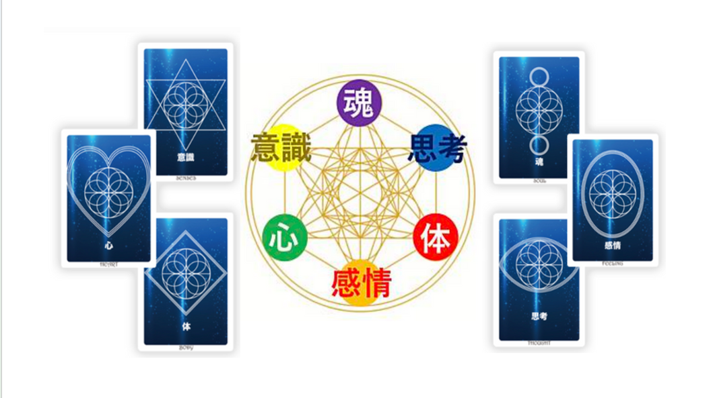

Our Philosophy
The SC® Method
心理学、脳科学、量子力学の融合。
それは単なるスキルアップではなく、
「魂・心・体・感情・意識・思考」の
6つのバランスを整える旅です。
"True leadership begins with the mastery of one's own internal landscape."
01
Psychology
心理学的手法による行動変容。自己肯定感の根源的な再構築。深層心理にアプローチし、揺るぎない自信を育みます。

02
Neuroscience
脳科学的アプローチによる思考癖の解放。神経可塑性を利用し、成功への回路を脳内に構築。ストレス耐性と決断力を高めます。
03
Quantum Physics
量子力学の応用による潜在意識のブロック解除。エネルギーの最適化を行い、望む未来を引き寄せる周波数を整えます。

04
Holistic Balance
魂・心・体・感情・意識・思考の6つを統合し、自発的に成果を生み出す次世代型リーダーへ。持続可能な成功と、内面的な幸福を両立させます。